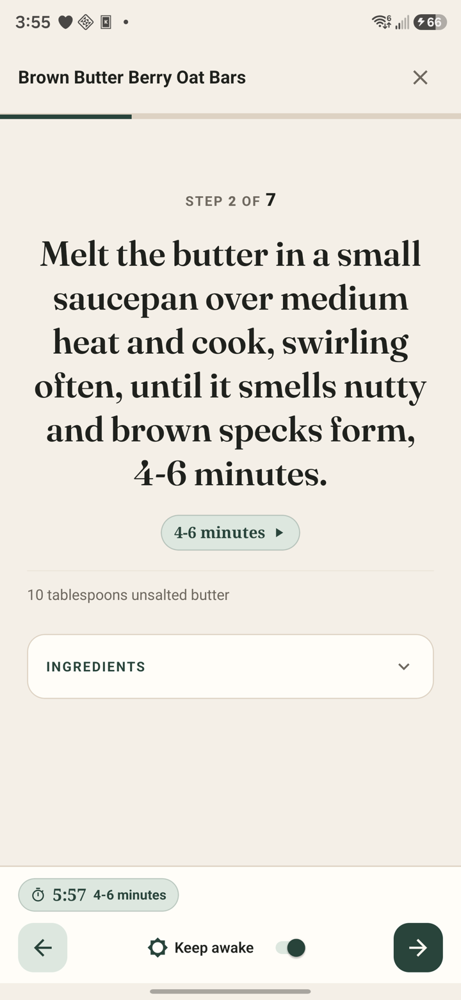
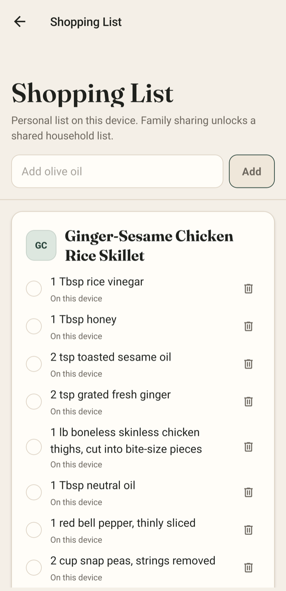

Paste a link.
Get cooking.
LinkDish turns any recipe link into a clean, practical cookbook
entry—with the photo, ingredients, steps, and source intact.
Free to start · No card required
· Android & web
↗
Recipe link
weeknightkitchen.com/berry-oat-bars
✓ Saved
Brown Butter
Berry Oat Bars
The recipe itself. No pop-ups, detours, or tiny type.
- Yield
- 9 bars
- Prep
- 15 min
- Cook
- 38 min
Original source always stays one tap away.

On iPhone or iPad? Open LinkDish in Safari and
add it to your Home Screen.
A recipe in.
The clutter out.
LinkDish keeps the useful parts close and the original author
credited.
-
01
Paste or share
Send LinkDish any public recipe page from your browser.
-
02
We tidy it up
The photo, timing, servings, ingredients, and steps become one
clean entry.
-
03
Cook from it
Scale servings, start timers, check steps, and build your
shopping list.
A cookbook that works
the way you cook.
Quiet when you are browsing. Clear when your hands are busy.

Step timer
08:42
01
Readable from across the counter.
Cook mode gives every step room to breathe. Parsed timers stay
beside the instruction that needs them, so the recipe keeps
moving with you.
- Large, focused steps
- Timers pulled from the method
- Ingredients checked as you go
02
Your recipe, your serving size.
Half it, double it, or choose a custom yield. LinkDish does the
recipe math while keeping the original quantities visible.
½×1×2×Custom

✓
Fresh ginger
03
Ingredients become the list.
Send what you need straight from a recipe. Keep personal
groceries simple, or share one household list with Family.
- Recipe-linked groceries
- Tap to check off
- Shared household list
One household.
One dinner plan.
Family keeps shared recipes and the household shopping list
together, even when dinner is a group project.
Explore Family →
R
Robert savedGinger-sesame chicken
Recipe
H
Household addedRice vinegar · Snap peas
List
✓
Dinner planEveryone knows what’s next
Synced
A plan for every
size of cookbook.
Try LinkDish without a card. Upgrade when you want more imports or
a shared household.
Free
$0
Try the whole idea.
- 3 recipe imports
- Up to 15 saved recipes
- No card required
Start free
Plus
$2.99 / month
For your personal cookbook.
- 100 imports each month
- Unlimited saved recipes
- All kitchen tools included
See Plus
Family
$4.99 / month
For the whole table.
- 250 imports each month
- Shared household cookbook
- Shared shopping list
See Family
Annual plans are also available in LinkDish.
A few things
before dinner.
Where can I use LinkDish?
LinkDish is available on Android and as a web app. On iPhone and
iPad, open it in Safari and add it to your Home Screen.
Does LinkDish replace the original recipe source?
No. Every recipe keeps its original source visible. LinkDish
simply gives you a cleaner way to save and cook from it.
What kind of links work best?
Public recipe pages work best. Sites that require a login or
block access may not import.
Need help with an import or account?
Visit LinkDish Support for quick checks,
the support form, and account or privacy help.
Paste a link.
Get cooking.
Save your first recipe in less time than it takes the oven to
preheat.